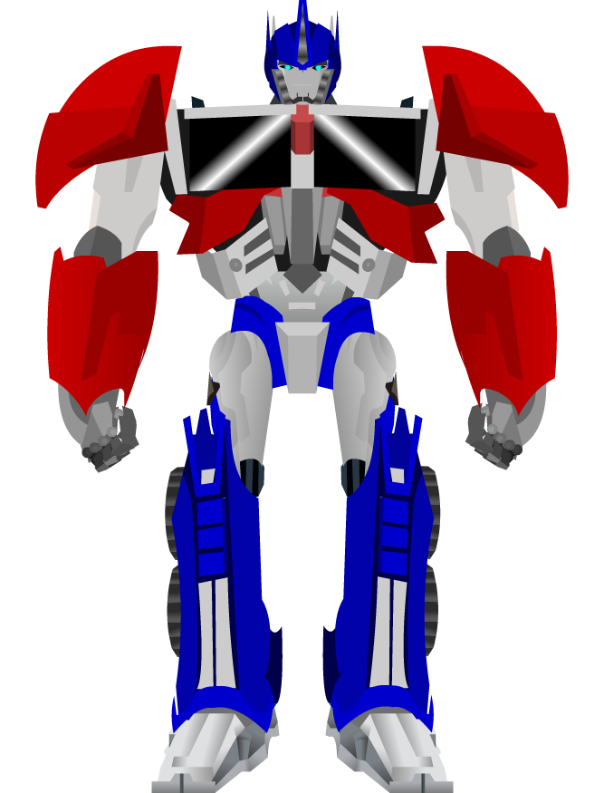

Live DevLog
| 06 Jun 2018 |
| 23:25:07 | BACKUP |  Running Running |
| 23:22:34 | ALPHA |  Updated Updated |
| 23:21:46 | STATUS |  So far my work for today So far my work for today |
| 22:50:56 | FIXED |  Transformations not added when taking the transformation crystals although the data *is* created Transformations not added when taking the transformation crystals although the data *is* created |
| 22:35:21 | TRANSFORMATION | IJsblokje |
| 22:25:59 | DONE |  Crystal will disappear once Ryanna absorbed its power Crystal will disappear once Ryanna absorbed its power |
| 20:52:21 | STATUS | It appears Ryanna can pick up the crystal now... I need to check the data if everything's right though |
| 20:51:47 | DONE | Mounted 1 IKEA chair.... 3 more to go |
| 19:19:57 | MYSTERY |  It doesn't happen anymore, and it's anybody's guess why it happened in the first place :-/ It doesn't happen anymore, and it's anybody's guess why it happened in the first place :-/ |
| 19:17:01 | BUG |  !!FATAL ERROR!!!
Error
[string "Libs/flow.rel/flow.lua"]:56: attempt to call field 'undef' (a nil value)
Traceback
[string "Script/Subs/Error.lua"]:59: in function 'undef'
[string "Libs/flow.rel/flow.lua"]:56: in function 'define'
[string "Libs/flow.rel/flow.lua"]:86: in function 'use'
[string "script/subs/loadgame.lua"]:94: in function 'Load'
[string "script/flows/mainmenu.lua"]:162: in function <[string "script/flows/mainmenu.lua"]:156>
[string "Libs/LAURA.REL/debugconsole.lua"]:118: in function 'nothing'
[string "Libs/killcallback.rel/kcb.lua"]:42: in function <[string "Libs/killcallback.rel/kcb.lua"]:41>
[C]: in function 'xpcall'
NOTHING should make it possible this can happen, so I really wonder how it still happens :-/ |
| 19:08:36 | FIXED | Demon == nil |
| 18:59:40 | FIXED | Of course, I fixed that as well |
| 18:58:49 | COCKROACH |  Ingore fixed, but now there was a casing error Ingore fixed, but now there was a casing error |
| 18:52:07 | TEST |  Let's test that! Let's test that! |
| 18:52:02 | FIXED | I think I fixed that |
| 17:59:35 | BUG | Clicking the crystal does not do anything.... This needs to be sorted out... |
| 17:49:39 | DONE | Crystal pick up code |
| 17:21:02 | SCENARIO |  pick up text pick up text |
| 17:20:56 | NOTE |  which is not yet been fully scripted so trying to pick the crystal up will cause a crash... for now.... which is not yet been fully scripted so trying to pick the crystal up will cause a crash... for now.... |
| 17:20:31 | LINK |  Linked Demon Crystal to demon addition routine Linked Demon Crystal to demon addition routine |
| 15:38:12 | FIXED | I don't know why but the crystal's there now |
| 14:58:08 | DONE | TrickyGameTools/Ryanna#25 |
| 14:47:04 | GO |  Done TrickyGameTools/Ryanna#22 Done TrickyGameTools/Ryanna#22 |
| 14:25:29 | BUG | but the crystal won't show for some odd reason... :-/ |
| 14:25:15 | STATUS | Entering works |
| 14:14:50 | TEST | I need to test this of course.... |
| 14:06:49 | LINK | And vault's exit linked to interior of the palace |
| 14:06:36 | LINK | Inside vault linked to lock |
| 12:23:12 | CONFIRMED |   And that works the way it was intended now.... And that works the way it was intended now.... |
| 12:20:11 | FIXED | file misreferrence |
| 12:09:02 | ART |  Animated Nino walking South Animated Nino walking South |
| 00:23:21 | STATUS | see ya later |
| 00:23:05 | TODO |  Linkup code Linkup code |
| 00:22:11 | BACKUP | Running |
| 00:22:05 | GITHUB |  Updated Updated |
| 00:20:54 | TODO | issued as #119 |
| 00:20:08 | STATUS | Of course I need to script the crystals now |
| 05 Jun 2018 |
| 23:48:43 | MYSTERY | I'm not quite sure why the Kthura editor marks its obstacles in such a strange manner.... |
| 23:48:18 | MAP |  I designed the vault I designed the vault |
| 23:40:18 | KTHURA |  GINI project script modification for Crystal GINI project script modification for Crystal |
| 23:39:29 | KTHURA | Crystal script |
| 23:39:22 | ART | Crystal |
| 02 Jun 2018 |
| 23:53:46 | STATUS | In the next session the vault itself will be done ;) |
| 23:53:32 | BACKUP | Running |
| 23:50:33 | GITHUB | All crap pushed |
| 23:46:52 | NOTE | You can't fix what ain't broken, but at least no nil crash any more... |
| 23:46:39 | CONFIRMED | Yeah, that works... |
| 23:45:24 | NOTE | I refuse to call this a fix, but hopefully this takes care of stuff... Somehow... :-/ |
| 23:36:39 | BUG | Nil? |
| 23:33:47 | FIXED | Not return on false code |
| 23:23:29 | NOTE | it will for now produce an error, which is deliberate. I will soon script the vault itself. |
| 23:23:08 | LINK | Puzzle correct linked to vault opening function |
| 23:17:34 | FIXED | "A" was entered by default some how when getting into the vault enter mode |
| 23:15:00 | FIXED | No font error (would only trigger when using debug cheats). |
| 19:49:38 | ENHANCEMENT |  IMG classing IMG classing |
| 19:27:58 | HOMEBREW |  Some issues with TFT REVAMPED fixed Some issues with TFT REVAMPED fixed |
| 19:05:44 | FIXED | I think I fixed it now |
| 19:04:38 | CONFIRMED | Yup, I do get an error that makes sense... Well, almost... :-/ |
| 19:01:22 | RYANNA |  I've fixed a little issue in the error catcher. Hopefully it can shine a line on what exactly happened. I've fixed a little issue in the error catcher. Hopefully it can shine a line on what exactly happened. |
| 19:01:02 | BUG | the error above should not be possible |
| 19:00:50 | DUMP | !!FATAL ERROR!!!
Error
preprocess.lua:141: bad argument #1 to 'ipairs' (table expected, got nil)
Traceback
[string "Script/Subs/Error.lua"]:59: in function <[string "Script/Subs/Error.lua"]:24>
[C]: in function 'ipairs'
preprocess.lua:141: in function 'PreProcess'
use.lua:43: in function 'Use'
[string "Script/Maps/Script/TOWN_WINDVILLE.lua"]:143: in function <[string "Script/Maps/Script/TOWN_WINDVILLE.lua"]:140>
[string "Script/Flows/field.rel/field.lua"]:452: in function 'odraw'
[string "Libs/killcallback.rel/kcb.lua"]:77: in function 'draw'
[C]: in function 'xpcall' |
| 17:52:57 | TEST | Time to test's short, but I'll have more time later, so it ain't that much of a setback |
| 17:33:54 | TODO | Before I can check that a proper linkup is in order |
| 17:33:10 | NOTE | The system will NOT yet check if everything's alright... I first need to find out if all I did so far actually works... at all |
| 17:32:29 | DONE | Show what letters have been entered |
| 16:56:18 | FIXED | And some more of those |
| 16:51:43 | FIXED | A few errors that come up on the way |
| 16:46:47 | RYANNA | Builder now set to alias a few font pics for easier access in vault puzzle |
| 16:24:02 | SCRIPT |  Base Script vault puzzle Base Script vault puzzle |
| 16:23:51 | FONT |  Put in the arrow characters and some other charts I'll need Put in the arrow characters and some other charts I'll need |
| 15:58:34 | LUA |  MousePos MousePos
Makes it quicker to call, and if Love decides to do things different again for no apparent reason I now only have to change ONE function and everything will work again :P |
| 15:36:56 | NOTE | The fact that I wrote them does not mean I can all remember them.... There's way too much |
| 15:36:37 | STUDY |  Right, I had to look up the input routines once more :D Right, I had to look up the input routines once more :D |
| 15:30:26 | FIXED | FOund and fixed PhantasarProductions/TFTRevamp#603 |
| 11:13:14 | CONFIG |  Button coords Button coords |
| 10:37:18 | CONFIG | Vault code |
| 10:02:59 | GO | Taken care of PhantasarProductions/WhoVirus#12 |
| 01 Jun 2018 |
| 22:00:14 | ALPHA | Updated |
| 21:59:41 | BACKUP |  Running Running |
| 21:58:19 | CONFIRMED | That all works |
| 21:00:13 | LINK | And vice versa also, by the way |
| 21:00:04 | LINK | Link code for going from the entrance to the main section of the place has been written |
| 19:48:32 | FIXED | Project file error fixed |
| 19:45:17 | FIXED | This should fix a few issues in the credits.md file (I hope). |
| 19:41:45 | FIXED | Tricky1975/trickyunits_go#27 |
| 15:41:06 | TODO | Linking the two palace rooms |
| 15:37:35 | MAP | Palace decorated with candles and torches |
| 15:29:26 | FIXED | Output error |
| 15:23:36 | ART | converted wall torch |
| 15:23:25 | ART | Converted Candle |
| 15:17:44 | FIXED | There was a little problem in the process though |
| 15:14:58 | NOTE | The JBTF builders performs no kind of compression at all. Not in the png files and not in the JCR packing and not in the JCR fat. This was to ensure compatibility with all future tools I may need on this matter. |
| 15:14:04 | BLITZMAX |  I've set up a quick took to convert BlitzMax style animations to jbtf files I've set up a quick took to convert BlitzMax style animations to jbtf files |
| 12:37:12 | NOTE | You cannot yet enter the palace interior as the proper linkups have not yet been done |
| 12:36:47 | MAP | Windville palace interior |
| 12:01:47 | LUA | In source note to self |
| 11:57:15 | OFFTOPIC |  TRUTH!!!! TRUTH!!!!
|
| 11:40:48 | ART | King |
| 31 May 2018 |
| 23:19:31 | STATUS | Until the next time |
| 23:18:27 | ALPHA | Updated |
| 23:17:16 | BACKUP | Running |
| 17:21:52 | JCR6 |  A rebuild is in order A rebuild is in order |
| 17:15:30 | FIXED | Credits error |
| 14:09:00 | CONFIRMED | It works |
| 14:04:00 | LINK | Back to the statue place from the castle plus the music changed back properly |
| 13:46:18 | MAP | Set up the entry hall of the royal palace |
| 13:45:19 | ALPHA | That will mean that I will (unless some "unforgivable" bugs do pop up the upcoming time), very likely open the hidden alpha version next weekend |
| 13:43:53 | NOTE | I could no longer replicate #109 |
| 12:34:09 | BUG | This did lead to the discovery of #118, but odd as it my seem this bug is NOT related to #17 |
| 12:33:53 | CLOSED |  #17 #17 |
| 12:33:48 | FIXED | I "Fixed " #17 |
| 12:22:59 | FIXED | ...........X.....X...........
...........X.....X...........
......XXXXXX.....XXXXXX......
......X...............X......
......X...............X......
......X...............X......
......X...............X......
......X......XXXX.....X.....X
......X......XXXX.....X......
......X......XXXX.....X......
......X......XXXX.....X......
......X...............X......
......X...............X......
......X...............X......
......X...............X......
......X...............X......
......XXXXXXXX.XXXXXXXX......
............................X Now THIS was what I wanted to see |
| 12:21:16 | MYSTERY | DId I fix it? |
| 12:14:23 | FIXED | Part of the problem fixed, but does that fix things as a whole? |
| 10:45:28 | COCKROACH | I totally do NOT understand how THIS result could come out:...........XX....XX...........
...........XX....XX...........
......XXXXXXX....XXXXXXX......
......XXXXXXX....XXXXXXX......
......XXXXXXX....XXXXXXX......
......XXXXXXX....XXXXXXX......
......XXXXXXX....XXXXXXX......
......XXXXXXXXXXXXXXXXXX....XX
......XXXXXXXXXXXXXXXXXX....XX
......XXXXXXXXXXXXXXXXXX....XX
......XXXXXXXXXXXXXXXXXX....XX
......XXXXXXXXXXXXXXXXXX....XX
...........XXXXXXXXXXXXX....XX
.............XXXXXXXXXXX....XX
.............XXXXXXXXXXX....XX
.............XXXXXXXXXXX....XX
.............XXXXXXXXXXX....XX
.............XXXXXXXXXXX....XX
...............XXXXXXXXX....XX
...............XXXXXXXXX....XX
...............XXXXXXXXX....XX
...............XXXXXXXXX....XX
...............XXXXXXXXX....XX
..................XXXXXX....XX
............................XX
............................XX
............................XX
............................XX
............................XX
............................XX |
| 10:36:52 | SOLVED |  I think I've seen it... This is acutally a bug in the BlitzMax version of Kthura COINCIDENTALLY causing the right result, as BlitzMax could not properly divide with Integer numbers, but Lua having this ability causes the strange result.... Oh crap... I think I've seen it... This is acutally a bug in the BlitzMax version of Kthura COINCIDENTALLY causing the right result, as BlitzMax could not properly divide with Integer numbers, but Lua having this ability causes the strange result.... Oh crap... |
| 10:29:18 | DUMP | 0, 0, 0, 0
0, 0, 0, 0
0, 0, 0, 0
1, 0, 1, 0
2, 0, 2, 0
5, 1, 5, 1
10, 2, 10, 2
20, 4, 20, 4
40, 8, 40, 8
80, 16, 80, 16
These are the results dumped by BlitzMax |
| 10:28:29 | BLITZMAX | Global ax[]
Global ay[]
ax = [5,10,20,40,80,160,320,640,1280,2560]
ay = [1, 2, 4, 8,16, 32, 64,128, 256, 512]
GW=32
GH=32
For i = 0 Until Len ax
X=ax[i]
Y=ay[i]
TX = Floor(X/GW)
TY = Floor(Y/GH)
TW = Ceil((X+W)/GW)
TH = Ceil((Y+H)/GH)
Print tx+"~t"+ty+"~t"+tw+"~t"+th
Next
This is a mini BlitzMax Program and I'm gonna translate that into Lua and see what will happen. |
| 10:23:14 | BLITZMAX | I've been looking up the blockmap code in BlitzMax and I can see is that the calcuation in BlitzMax and Lua is exactly the same as in Lua... Makes me wonder why this still goes wrong then |
| 10:19:27 | CONFIRMED | The one spot to many does take place both horizontally and vertically |
| 10:05:53 | LINK | Link up code into the palace |
| 10:04:32 | JCR6 | I first must wait until the music resource has been completely rebuilt |
| 10:02:52 | MAP | In the castle, I've for now only set a "block zone"... I did this in order to see how the blackmap generator behaves exactly |
| 10:00:39 | MUSIC |  When you are inside the castle "Tower Defense" by Eric Matyas will play. When you are inside the castle "Tower Defense" by Eric Matyas will play. |
| 30 May 2018 |
| 21:13:44 | TODO | #117 |
| 21:06:37 | ALPHA | ANother update |
| 21:00:02 | FIXED | Blockmap issue |
| 20:54:23 | FIXED | Money chest in Anna's Temple |
| 20:54:11 | FIXED |  Music in Anna's Temple was wrong Music in Anna's Temple was wrong |
| 20:51:16 | TODO | #116 |
| 20:50:40 | TODO | #115 |
| 19:58:09 | ART | The "lock" for the vault in the castle has been set up |
| 17:56:24 | ALPHA | Updated |
| 17:55:44 | BACKUP | Running |
| 17:32:38 | PHANTASAR |  Another chapter... Yes that goes on too.... Another chapter... Yes that goes on too.... |
| 14:26:39 | ACHIEVEMENT |  You CHEAT! You CHEAT! |
| 13:54:22 | ALPHA | Alpha testers should be aware of the fact that I won't put in all the goodies in here all at once. They will be placed in here as the development progresses. |
| 13:52:57 | FIXED | A few map issues in Anna's temple fixed |
| 13:31:51 | ANNA |  Based on Anna's judgment, all doors should now open in Anna's temple basedon how satisfied Anna is about your hard work. ;) Based on Anna's judgment, all doors should now open in Anna's temple basedon how satisfied Anna is about your hard work. ;) |
| 13:27:42 | CLEANUP |  Debug line deactivated Debug line deactivated |
| 13:26:12 | KTHURA | ShowLabels routine in Kthura |
| 13:16:28 | STATUS | It appears to work at last |
| 13:10:48 | FIXED | General MapScript Error |
| 13:01:09 | SOLVED | One mystery solved.... Now to look into the other mystery, but first a little checkup |
| 12:41:02 | FIXED | A few pieces of data forgotten to send to the Anna server. |
| 12:03:29 | DONE | Some "real life" stuff... Yeah yeah, life goes on... :-/ |
| 09:51:27 | FIXED | "nil" |
| 09:46:22 | ANNA | I think I fixed the error... Still not sure why the error reporter points to a non-existent line, though... |
| 09:42:36 | ANNA | I've made sure the server code is 100% up-to-date now, and let's see what'll happen :-/ |
| 09:42:15 | ANALYSIS |  Analysis of the source code of this portion of Anna should render this impossible, but I've seen more impossibilities.... Analysis of the source code of this portion of Anna should render this impossible, but I've seen more impossibilities.... |
| 09:20:28 | ANALYSIS | Everything appears to be broken... |
| 09:15:19 | DEBUG |  Extra lines to find out why Extra lines to find out why |
| 09:15:10 | BUG | It doesn't work |
| 09:06:10 | FIXED | Kthura code typo fixed |
| 08:56:52 | LINK | Which I've done now |
| 08:55:54 | NOTE | This will NOT yet affect the workings of the temple, but I can now see if it all works as intended... That is once I've linked the Monk in town to the temple. |
| 08:55:08 | ANNA | Script set up which should contact Anna |
| 29 May 2018 |
| 21:52:01 | STATUS | And that's it, folks... See ya! |
| 21:51:22 | GITHUB | Some code overdue pushed |
| 21:46:57 | ALPHA | Updated |
| 21:46:51 | BACKUP | Running |
| 21:46:41 | STATUS | And I feel that I must call it a day |
| 21:41:15 | NOTE | Yeah, I should fix this in TFT REVAMPED as well |
| 21:40:59 | FIXED | Cosmetic issue with questions that was never fixed since I began on TFT REVAMPED |
| 21:26:14 | NOTE | NO TREASURE has yet been put in here, this will be done as the development progresses. |
| 21:25:50 | MAP | Skeleton set up for Anna's temple |
| 20:22:31 | MUSIC | "Angevin" by Kevin McLeod will be (as always) be used for Anna's Temple. |
| 20:17:40 | CONFIRMED | It appears to be working ;) |
| 20:14:57 | TEST | Of course... here comes the test.... First and only take, I hope... |
| 20:14:34 | LINK | Linked #112 |
| 20:13:15 | STUDY | https://love2d.org/wiki/love.system.openURL -- I need this to make the #112 documentation actually get linked to the game. |
| 20:10:26 | PLAN |  #114 #114 |
| 19:53:50 | NOTE | These events have not yet been fully linked in the Lua script, but that's gonna happen soon ;) |
| 19:53:29 | DONE | The Monk will ask you now if you want to enter the temple (and she'll also provide the link to the documentation sites) |
| 19:51:53 | NOTE | Since These documents are stored on the same server as this devlog, the documents will be visible as soon as this devlog auto-updates, and then the issue will also close automatically |
| 19:51:09 | CLOSED | #112 |
| 19:48:46 | ANNA | Anna documentation about Anna herself has been set up. |
| 19:20:06 | ANNA | The documentation about using Anna with a Game Jolt account has been set up. |
| 15:39:00 | TECHNO |  Now I haven't used the question routine in this game yet. There shouldn't be a reason why it doesn't work, but what should and what is are two different things so here goes... Now I haven't used the question routine in this game yet. There shouldn't be a reason why it doesn't work, but what should and what is are two different things so here goes... |
| 15:35:45 | LAZY |  On the LAAAZY way! On the LAAAZY way! |
| 15:35:41 | FIXED | I fixed this |
| 15:33:22 | BUG | No script for Anna monks? Nah! |
| 15:27:13 | FIXED | And now she should |
| 15:27:09 | BUG | And now the monk doesn't appear any more |
| 15:20:40 | TEST | I need to test this |
| 15:19:46 | ANNA | Speaking to the monk should work already, but she won't yet grant access to the temple. In fact she won't even ask if you want to yet. |
| 15:12:16 | NOTE | No matter where you encounter a monk of Anna's they'll always say the same. |
| 15:11:54 | SCENARIO | Anna's monk |
| 15:02:09 | NOTE | Now this error thrower should never be able to activate at all, and if it does there's either a serious bug, or you have a hacked version of the game. |
| 15:01:28 | ANNA | In game error thrower for invalid monk appearance |
| 14:58:59 | ANNA | Server side code's done |
| 14:58:46 | FIXED | duplicate declarations |
| 14:57:11 | FIXED | And that's been taken care of! |
| 14:55:19 | BUG | And now Anna tries something the underlying framework doesn't like |
| 14:54:07 | DONE | Yup, the bug corrector works, and the best part is, if the bug gets fixed, this routine will notice and ignore the bug ever existed... Yes, I know, I'm cool, you don't need to tell me (Now I gotta puke because of myself). |
| 14:44:21 | NOTE | I will not "fix" that, but at least I'll make sure Anna won't suffer from this. |
| 14:44:01 | BUG | ashleygwinnell/Game-Jolt-PHP-Game-API#2 |
| 14:20:46 | FIXED | code typo |
| 14:19:29 | FIXED | Credential error |
| 14:02:16 | FIXED | Authentication conflict |